Glass Tube Manufacturing Process
This case study describes linear model identification for a glass tube manufacturing process. The experiments and the data are discussed in:
V. Wertz, G. Bastin and M. Heet: Identification of a glass tube drawing bench. Proc. of the 10th IFAC Congress, Vol 10, pp 334-339 Paper number 14.5-5-2. Munich August 1987.
The output of the process is the thickness and the diameter of the manufactured tube. The inputs are the air-pressure inside the tube and the drawing speed.
The problem of modeling the process from the input speed to the output thickness is described below. Various options for analyzing data and determining model order are discussed.
Contents
Experimental Data
We begin by loading the input and output data, saved as an iddata object:
load thispe25.mat
The data are contained in the variable glass:
glass
Time domain data set with 2700 samples.
Sampling interval: 1
Outputs Unit (if specified)
Thickn
Inputs Unit (if specified)
Speed
Data has 2700 samples of one input (Speed) and one output (Thickn). The sampling interval is 1 sec.
For estimation and cross-validation purpose, split it into two halves:
ze = glass(1001:1500); %Estimation data zv = glass(1501:2000,:); %Validation data
A close-up view of the estimation data:
plot(ze(101:200)) %Plot the estimation data range from samples 101 to 200.
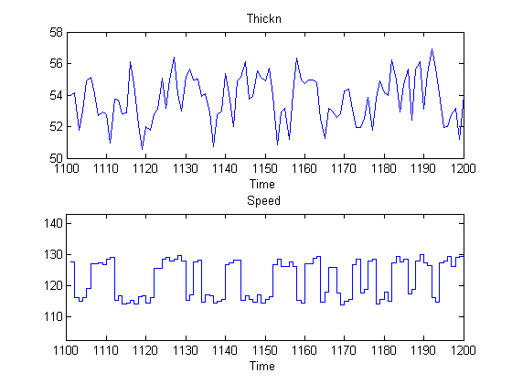 Preliminary Analysis of Data
Let us remove the mean values as a first preprocessing step:
ze = detrend(ze); zv = detrend(zv);
The sampling interval of the data is 1 second, while the process time constants might be much slower. We may detect some rather high frequencies in the output. In order to affirm this, let us first compute the input and output spectra:
sy = spa(ze(:,1,[])); su = spa(ze(:,[],1)); pause off bode(sy,su,'same'), grid on, legend({'Output','Input'}) pause on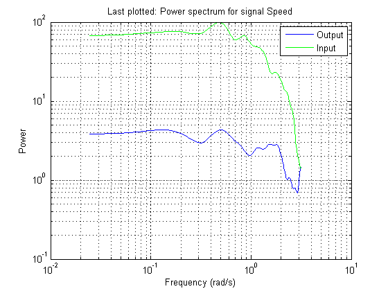
Note that the input has very little relative energy above 1 rad/sec while a substantial part of the output's energy comes from frequencies above 1 rad/sec. There are thus some high frequency disturbances that may cause some problem for the model building.
We compute the impulse response, using part of the data to gain some insight into potential feedback and delay from input to output:
impulse(ze,'sd',3,'fill')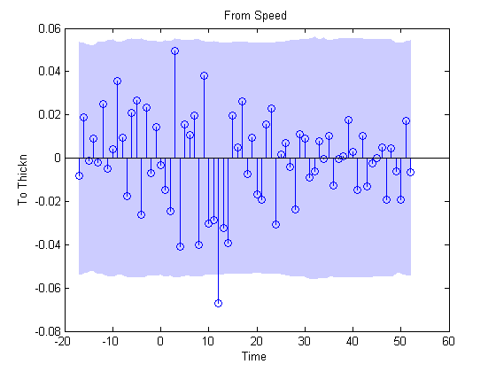
We see a delay of about 12 samples in the impulse response (first significant response value outside the confidence interval), which is quite substantial. Also, the impulse response is not insignificant for negative time lags. This indicates that there is a good probability of feedback in the data, so that future values of output influence (get added to) the current inputs. The input delay may be calculated explicitly using delayest:
delayest(ze)
ans =
12
The probability of feedback may be obtained using feedback:
feedback(ze) %compute probability of feedback in data
ans = 52.7772
Thus, it is almost certain that there is feedback present in the data.
We also, as a preliminary test, compute the spectral analysis estimate:
g = spa(ze); bode(g,'sd',1,'fill')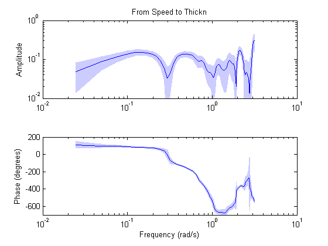
We note, among other things, that the high frequency behavior is quite uncertain. It may be advisable to limit the model range to frequencies lower than 1 rad/s.
Parametric Models of the Process Behavior
Let us do a quick check if we can pick up good dynamics by just computing a fourth order ARX model using the estimation data and simulate that model using the validation data. We know that the delay is about 12 seconds.
m1 = arx(ze,[4 4 12]); compare(zv,m1);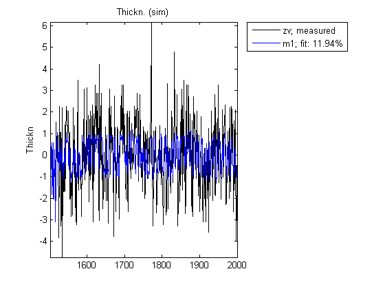
A close view of simulation results:
compare(zv,m1,inf,101:200)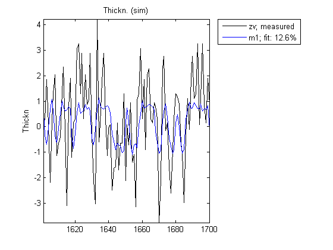
There are clear difficulties to deal with the high frequency components of the output. That, in conjunction with the long delay, suggests that we decimate the data by four (i.e. low-pass filter it and pick every fourth value):
if issignalinstalled % Use "resample" command for decimation if Signal Processing Toolbox(TM) % is available. zd = resample(detrend(glass),1,4,20); else % Otherwise, use the slower alternative - "idresamp" zd = idresamp(detrend(glass),4); end zde = zd(1:500); zdv = zd(501:size(zd,'N'));
Let us find a good structure for the decimated data. First compute the impulse response:
impulse(zde,'sd',3,'fill')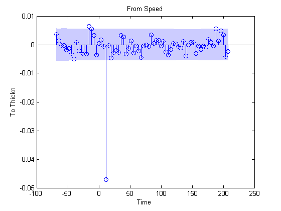
We again see that the delay is about 3 samples (which is consistent with what we saw above; 12 second delay with sampling interval of 4 seconds in zde). Let us now try estimating a default model, where the order is automatically picked by the estimator.
Mdefault = pem(zde); compare(zdv,Mdefault)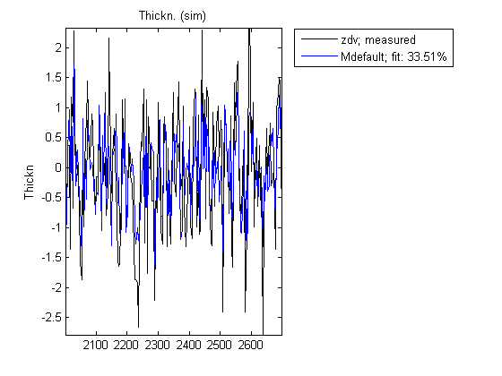
The estimator picked a 5th order model. It seems to provide a better fit than that for the undecimated data. Let us now systematically evaluate what model structure and orders we can use. First we look for the delay:
V = arxstruc(zde,zdv,struc(2,2,1:30)); nn = selstruc(V,0)
nn =
2 2 3
ARXSTRUC also suggests a delay of 3 samples which is consistent with the observations from the impulse response. Therefore, we fix the delay to the vicinity of 3 and test several different orders with and around this delay:
V = arxstruc(zde,zdv,struc(1:5,1:5,nn(3)-1:nn(3)+1));
Now we call selstruc on the returned matrix in order to pick the most preferred model order (minimum loss function, which is shown in the first row of V).
nn = selstruc(V,0); %choose the "best" model order
SELSTRUC could be called with just one input to invoke an interactive mode of order selection (nn = selstruc(V)).
Let us compute and check the model for the "best" order returned in variable nn:
m2 = arx(zde,nn); compare(zdv,m2,inf,21:150);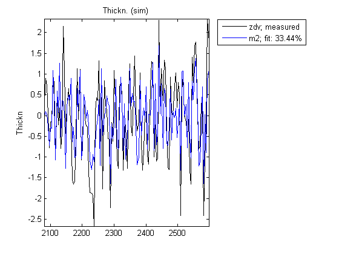
The model m2 seems to have captured the low-frequency dynamics pretty well. We can also compare the bode plots of the model m1 and m2:
bode(m1,m2)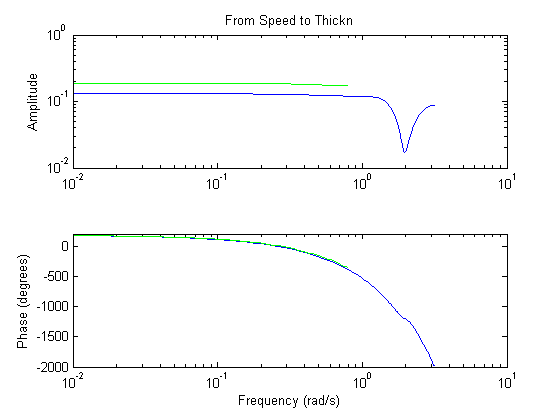
We see that the two models agree well up to the Nyquist frequency of the slower sampled data.
Let us test the residuals:
resid(zdv,m2);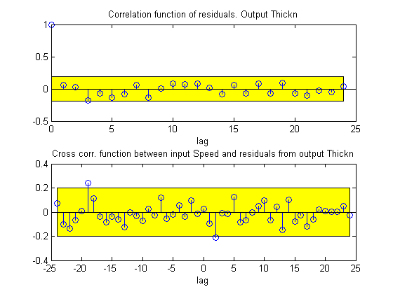
The residuals are inside the confidence interval region, indicating that the essential dynamics have been captured by the model. What does the pole-zero diagram tell us?
zpplot(m2,'sd',3), axis([ -1.1898,1.3778,-1.5112,1.5688])
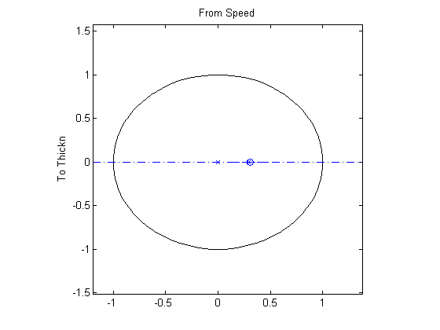 From the pole-zero plot, there is a clear indication of pole-zero cancellations for several pairs. This is because their locations overlap, within the confidence regions. This shows that we should be able to do well with lower order models. We shall return to that later. Currently, let us check if we can do better by modeling the noise separately in a Box-Jenkins model:
mb = bj(zde,[nn(2) 2 2 nn(1) nn(3)])
Discrete-time IDPOLY model: y(t) = [B(q)/F(q)]u(t) + [C(q)/D(q)]e(t)
B(q) = -0.007505 q^-2 - 0.182 q^-3 - 0.08003 q^-4
C(q) = 1 - 0.8793 q^-1 - 0.07971 q^-2
D(q) = 1 - 1.148 q^-1 + 0.1585 q^-2
F(q) = 1 + 0.499 q^-1
Estimated using BJ on data set zde
Loss function 0.404322 and FPE 0.417552
Sampling interval: 4
Is this better than the ARX-model in simulation?
compare(zdv,m2,mb)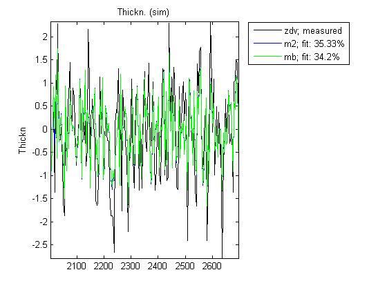
As shown by the comparison plot, the Box-Jenkins model describes the validation data set somewhat better, although there is no tremendous improvement. How about the bode plots?
bode(m2,mb)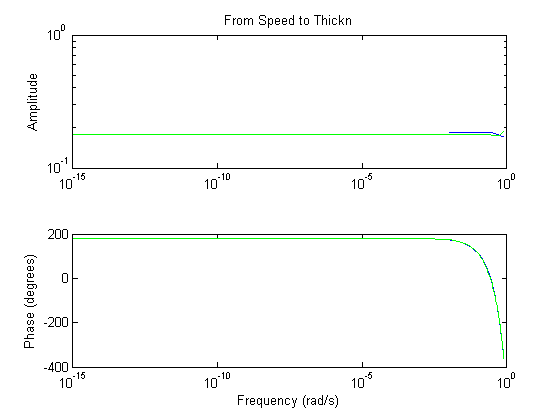
The models agree quite well on the bode plot, apart from the funny twist in the BJ model. This twist, however, seems to have some physical relevance, since we get better simulations in the latter case. Finally we can compare the final prediction error (FPE) of the two models:
[fpe(m2) fpe(mb)]
ans =
0.4164 0.4176
FPE is lower for mb, indicating that this model is likely to do a better job at predicting the future values of output, given the past input and output measurements.
To summarize: After decimation it is quite possible to build simple models that are capable of reproducing the validation set in a good manner. We can however do quite well with a much simpler model; a [1 1 3] ARX model:
m3 = arx(zde,[1 1 3])
Discrete-time IDPOLY model: A(q)y(t) = B(q)u(t) + e(t)
A(q) = 1 - 0.1151 q^-1
B(q) = -0.1788 q^-3
Estimated using ARX on data set zde
Loss function 0.436959 and FPE 0.440454
Sampling interval: 4
Simulation of model m3 compared against the validation data shows:
compare(zdv,m3,mb)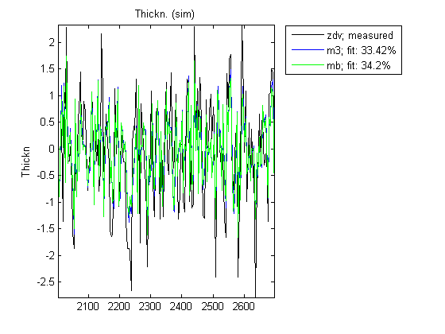
Similarly, we can compare the 5-step ahead prediction capability of this model against the previously estimated Box-Jenkins model mb:
compare(zdv,m3,mb,5)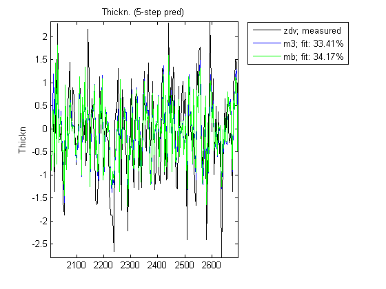
As these plots indicate, a reduction in model order does not significantly reduce its effectiveness in capturing the essential system dynamics and predicting the output 5 steps ahead.
Additional Information
For more information on identification of dynamic systems with System Identification Toolbox™ visit the System Identification Toolbox product information page.